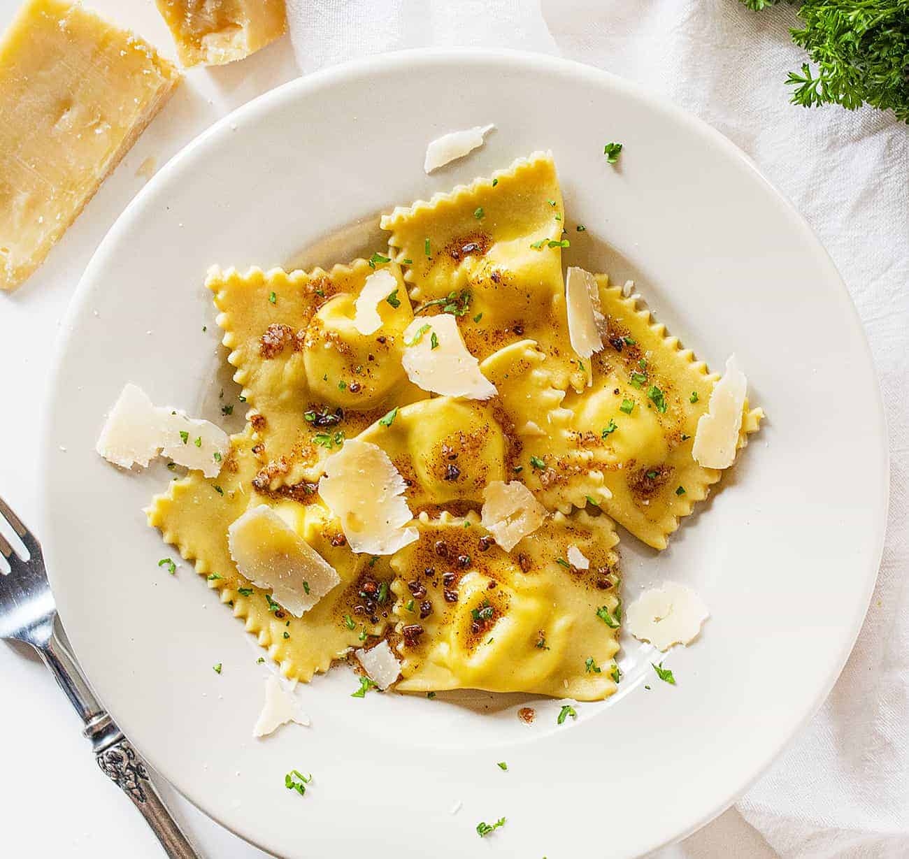

Ravioli

Description
Homemade ravioli is easier to make than you think!
This cheesy ravioli recipe topped with a simple cream
sauce is sure to impress everyone at your dinner table.
Ingredients
These are the ingredients you’ll need to make this homemade cheese ravioli recipe:
- For the dough: All-purpose flour, salt, eggs, water, and olive oil
- For the filling: Ricotta, cream cheese, mozzarella and provolone cheeses, an egg, and dried parsley
- For the sauce: Olive oil, garlic, prepared basil pesto sauce (you can use store-bought or homemade sauce), heavy cream, Parmesan cheese, and a jar of marinara sauce
- For the egg wash: An egg and water
Steps
Here’s a brief overview of what you can expect when you make this easy ravioli from scratch:
- Make the dough: Make and knead the dough, then form it into a ball. Tightly wrap the ball and refrigerate for an hour.
- Make the filling: Mix the filling ingredients together and set aside.
- Make the sauce: Cook the garlic and pesto in oil, stir in the heavy cream, and bring to a boil. Reduce to a simmer, then whisk in the Parmesan.
- Assemble the ravioli: Roll out the dough into sheets and brush an egg wash over a sheet of pasta. Drop cheese filling onto the dough about an inch apart. Cover with the top sheet of pasta and make a seal around each portion of filling. Cut out individual ravioli, then seal the edges.
- Cook and bake the ravioli: Boil the ravioli in salted water until the dumplings rise to the top and the filling is hot. Drain well. Bake the ravioli on a greased baking sheet until brown.
- Serve the ravioli: Divide the ravioli between bowls, top with the warmed marinara sauce, then finish with the sauce.